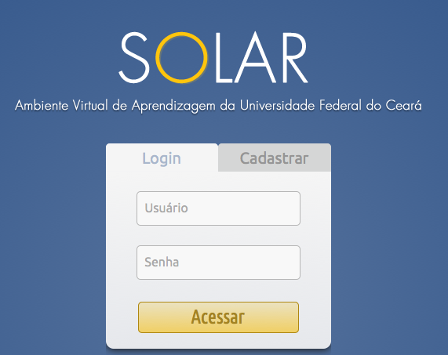

Acesso ao Ambiente¶
Cras justo odio, dapibus ac facilisis in, egestas eget quam. Praesent commodo cursus magna, vel scelerisque nisl consectetur et.
Login¶
Caso o usuário já possua uma Login e senha cadastrada, basta inserir estes dados e clicar em Acessar. A próxima página apresentada será a Home do sistema.
Cadastro¶
Para se cadastrar basta clicar no ícone Cadastrar. Na tela seguinte será solicitado o e-mail e o CPF do usuário.
- Inserir um CPF válido
- Inserir dados pessoais

- Inserir dados de acesso
- Inserir dados de contato

- Informar a instituição na qual você pertence
Depois de concluído o cadastro o usuário já pode entrar no sistema normalmente.